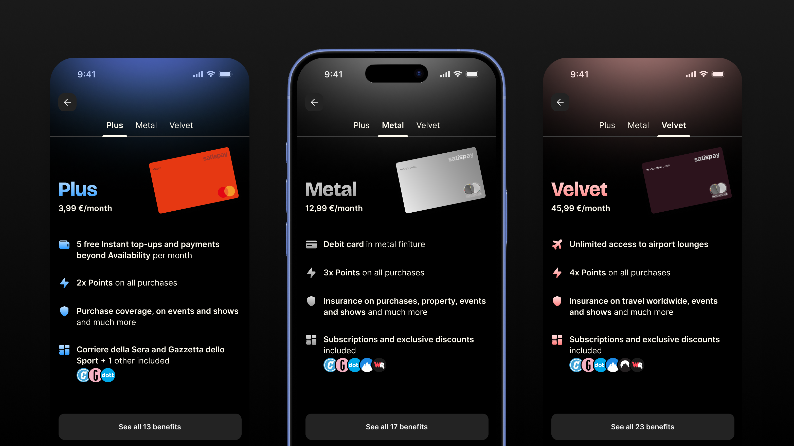

Plans: from one premium plan to three

Since its launch in 2015, Satispay's revenue has been tied to transactions, so it rises and falls with the seasons and with how much people spend each month. As the app grew into a full financial companion, with cards, IBAN, savings and investments, the company needed a steadier, recurring revenue stream. It also needed a broader offer to compete with Revolut and N26, which already sold tiered premium plans.
The answer was a subscription program. It started in December 2025 with Plus (€3.99/month), a single plan built around everyday savings: free instant top-ups, free Business Up payments, extra Points on every purchase and reduced investment fees. In July 2026 it became a three-tier offer, adding Metal (€12.99/month) and Velvet (€45.99/month), each with its own Mastercard card, airport lounge access and partner perks.
As the product designer of the Growth domain, I designed every experience in the plans: how users discover them, how they choose and subscribe, how they manage, switch and cancel, and how they use their perks, from airport lounges and Fast Track to partner subscriptions.
The problem

Satispay users are used to an app that's free and fast. Asking them to pay a monthly fee meant every screen had to show clear value, without slowing down the payment flows they open the app for.
Going from one plan to three made this harder in three ways:
- Choice: the top tier bundled up to 15 benefits across Points, investing, cards, insurance, travel and partner subscriptions. The paywall had to explain all of it without overloading people.
- Discovery: users had to understand what a plan gives them in a few seconds, at the right moment, without the app feeling like an ad. Every entry point said "Plus", and all of them had to work for any plan.
- Lifecycle: upgrades, downgrades and cancellations each have their own rules (a 14-day withdrawal period, pro-rata refunds, and card and lounge costs if you leave within 10 months). We had to make all of that easy to understand, and stay compliant with EU consumer law.
Research
We were asking people to pay for something they'd always had for free, so we involved users before building and kept testing after launch.
- Competitive analysis: I mapped the subscription journeys of Revolut, N26 and Monzo, plus subscription-led products like Duolingo, Gemini and Preply. Using familiar patterns lowered the risk of a first-ever paid offer.
- Benefit preference tests: we ran rounds of tests with users to find out which benefits they valued most. In a survey with over 700 users, people repeatedly picked the most and least important benefit from small sets drawn from 11 categories. Video streaming and cinema came out on top, followed by news. Most people cared about three to five types of service, so we focused each plan on a few strong benefits instead of the longest possible list.
- Paywall A/B tests: we tested a paywall that led with how much you'd save against one that listed features. The difference wasn't significant, and that told us the layout mattered more than the message. The next test, a two-step paywall inspired by Revolut, raised conversion by over 30% and became the base for all three plans.
Solutions
Discovery through balanced upsells. Discovery relies mostly on upsells and banners placed where a benefit makes sense, so users get the picture quickly. Each touchpoint shows one benefit, at the moment users feel the cost of not having it: right after paying a top-up fee, on a Business Up payment, or on the Points page. A frequency cap keeps them from feeling pushy.
A paywall built to compare. Plus, Metal and Velvet sit in tabs on one screen. Each tab leads with its card, the strongest visual difference between tiers, followed by its three or four best benefits. The full list is one tap away. Choosing monthly or annual billing happens in a second step, in a bottom sheet, so the first screen only has to answer one question: which plan is right for me?
A visual identity for each plan. Each plan has its own color: Plus blue, Metal silver and Velvet. The color carries through the avatar ring, the badge on the Profile page and the welcome screen. That way your plan stays visible across the app, and free users get a clear but quiet "Upgrade" entry point in the same spot.
Clear rules for switching and cancelling. Upgrades take effect right away, with no extra steps, and the refund for the old plan appears in the activity list. We chose fewer taps over a preview here, because the user is getting more. Downgrades and cancellations are the opposite: they always end on a recap that shows what you'll lose, what you'll get back, and any card or lounge costs, before you confirm. A short survey at the end tells us why people leave.
Perks you use inside the app. Metal and Velvet include access to 1,000+ airport lounges through DragonPass, plus Fast Track at security. The whole experience happens in Satispay: search an airport, browse lounges, buy or claim a pass and show a QR code at the entrance. No emails and no third-party app. Partner subscriptions like Corriere della Sera, La Gazzetta dello Sport and NordVPN are activated from the plan page in a few taps.
Impact
In about seven months, the program grew from around 2,000 to 25,000 subscribers across the three plans. That's around €900k in annual recurring revenue from a business line that didn't exist a year earlier.
- Paywall conversion: after the redesigned paywall and the new benefits, conversion at full price stayed above the 2% target for weeks in a row and peaked at 3%.
- Upsell touchpoints: the upsells brought in 1,900 subscribers in their first month and hit their target. The Points page got the most clicks, and the instant top-up moment converted best.
- Retention: 30-day rolling churn dropped from 10% to 6% as new benefits were added.
- Premium tiers: about 80% of Metal subscribers ordered the physical card within the first weeks.
Reflections and key learnings
Plans are now part of how people use Satispay. Plans started as an add-on and are now part of the Satispay ecosystem: the card, savings, investments and payments all connect to them. The clearest sign is that close to 30% of new users choose a plan when they start using the app.
Retention matters more than the benefit list. Most partner perks were used by fewer than 10% of subscribers. The big exception was NordVPN, at around 40%. A long list of benefits helps someone subscribe, but they stay for the few benefits they use every week. The next step is to point each subscriber to those benefits early, instead of adding more.
Some churn isn't a decision. A large share of early cancellations came from users who didn't have enough balance on renewal day. They hadn't chosen to leave. Letting the renewal pull the missing amount from the user's bank account fixed this at the system level, which no cancellation screen could.
Be clear about the hard parts. Withdrawal periods, pro-rata refunds and card costs are the moments where a subscription loses or earns trust. Spelling out the numbers on every downgrade and cancellation, even when it added a step, was always worth it.